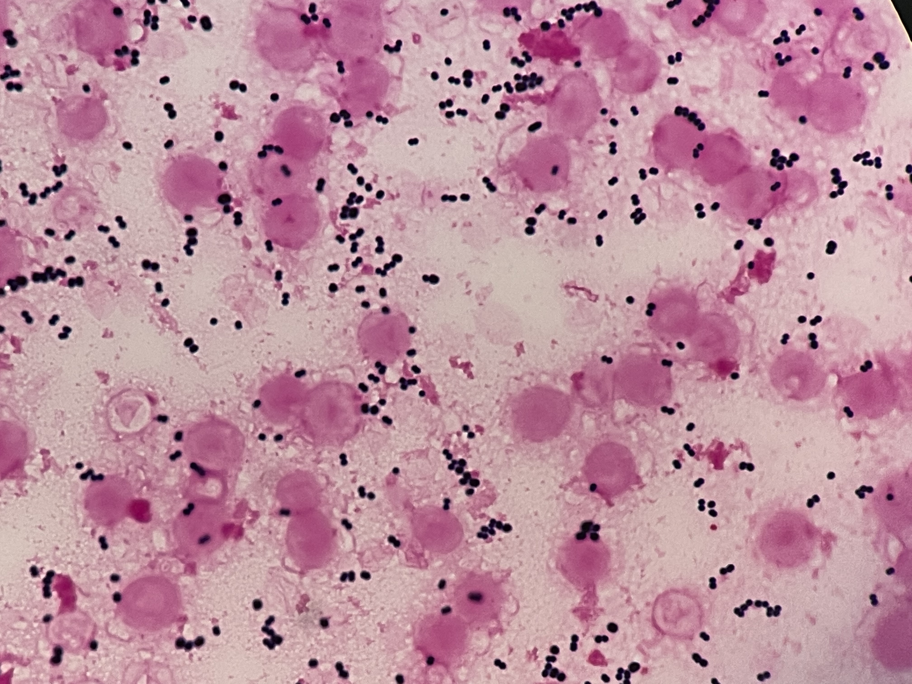
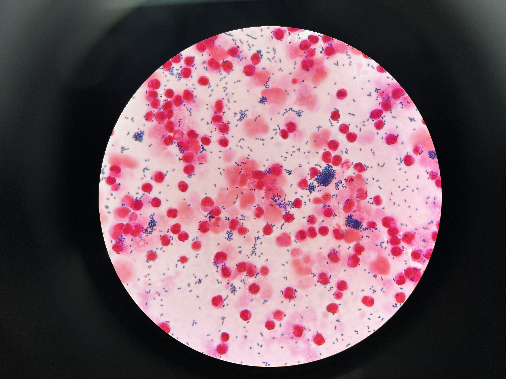
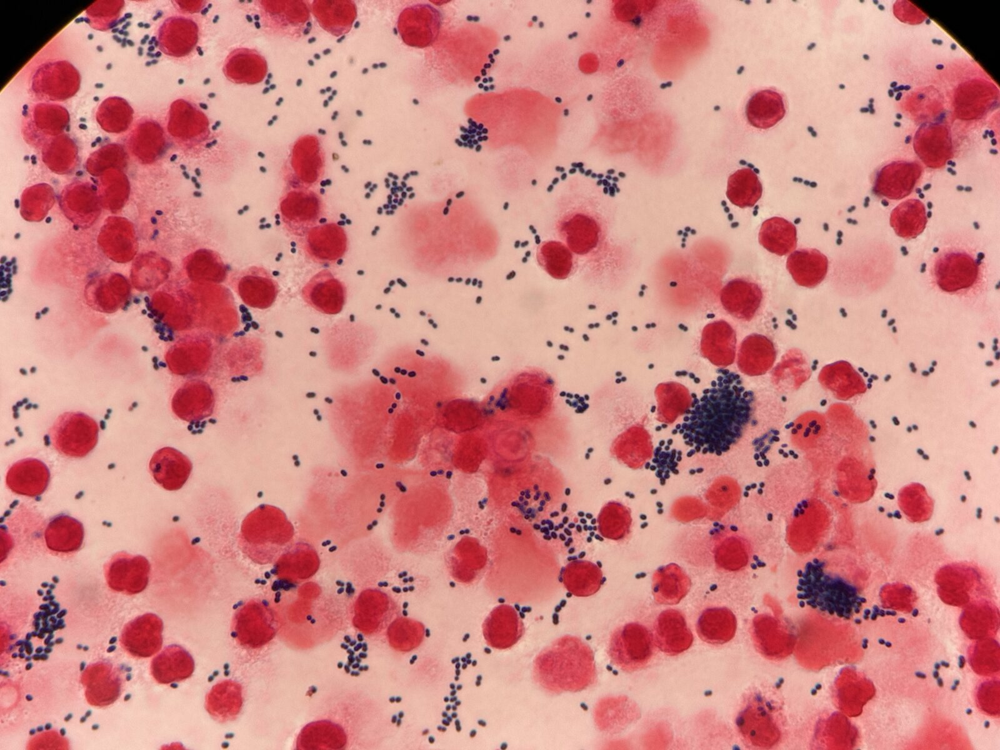
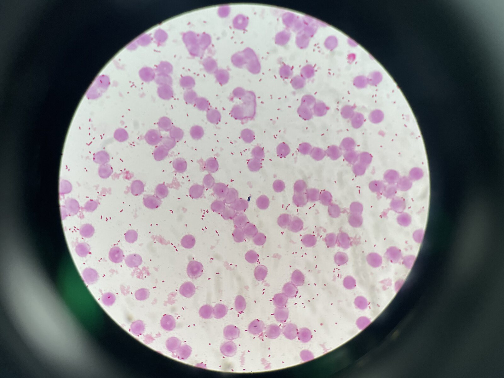
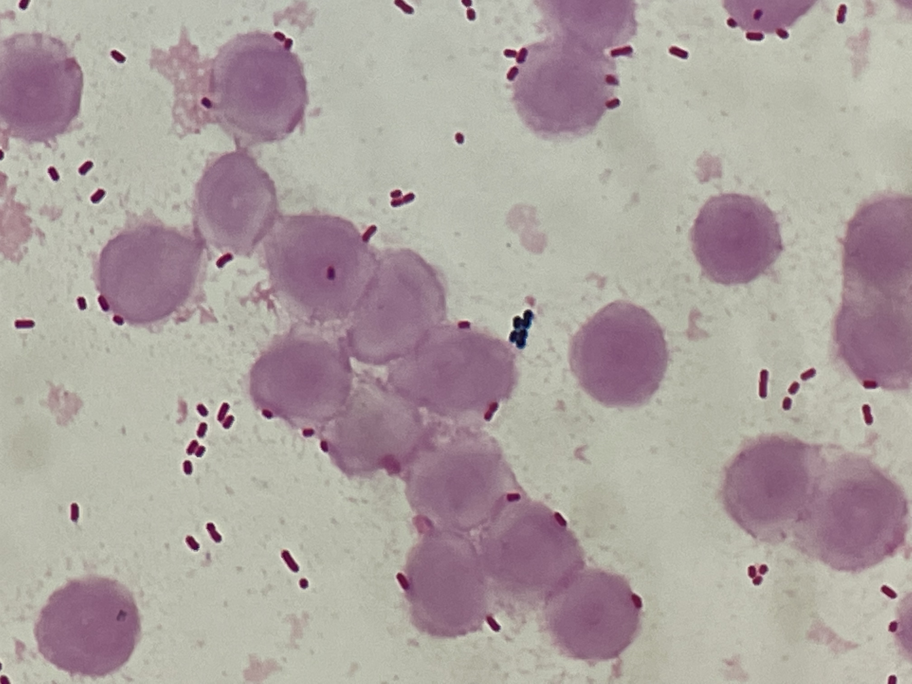

グラム染色 像（E. faecium） 撮影：ICU関谷





※ 関連菌として Enterococcus raffinosus（同じく腸球菌属の稀少種、VRE と同様に院内・カテーテル関連菌血症で問題になりうる）の院内記録も含めて表示しています。
分類・特徴
ヒトや動物の消化管に常在する腸球菌属の一種で、E. faecalis とともに臨床的に重要な2大菌種[3][4]。院内感染の主要な原因菌として重要性が増しており、バンコマイシン耐性 E. faecium（VREfm）の世界的拡大が特に問題となっている[1][2]。
主な感染症
ひとことメモ
- 腸管定着がリザーバ — VRE 接触隔離・手指衛生徹底
出典
- Wei Y, Palacios Araya D, Palmer KL. Enterococcus Faecium: Evolution, Adaptation, Pathogenesis and Emerging Therapeutics. Nat Rev Microbiol 2024;22(11):705-721.
- Zhou X, et al. Enterococcus Faecium: From Microbiological Insights to Practical Recommendations. Antimicrob Resist Infect Control 2020;9(1):130.
- Cattoir V. The Multifaceted Lifestyle of Enterococci. Curr Opin Microbiol 2022;65:73-80.
- Sood S, et al. Enterococcal Infections & Antimicrobial Resistance. Indian J Med Res 2008;128(2):111-21.
- Hendrickx AP, van Schaik W, Willems RJ. The Cell Wall Architecture of Enterococcus Faecium. Future Microbiol 2013;8(8):993-1010.
- Sun H, et al. Molecular Epidemiology, Antimicrobial Resistance, and Virulence of Enterococcus Faecium Bloodstream Isolates. BMC Microbiol 2025;25(1):765.
- Goh HMS, et al. Model Systems for Enterococcal Colonization and Infection. Virulence 2017;8(8):1525-1562.
- Mercuro NJ, et al. Combatting Resistant Enterococcal Infections. Expert Opin Pharmacother 2018;19(9):979-992.
- Mermel LA, et al. Clinical Practice Guidelines for Intravascular Catheter-Related Infection: 2009 IDSA Update. Clin Infect Dis 2009;49(1):1-45.
- Baddour LM, et al. Infective Endocarditis in Adults: AHA Statement. Circulation 2015;132(15):1435-86.
- Tsai HY, et al. Antimicrobial Susceptibility of Bacteremic VRE Faecium. Int J Antimicrob Agents 2021;58(1):106353.
- Riccardi N, et al. Therapeutic Options for vanB Genotype VRE. Microb Drug Resist 2021;27(4):536-545.